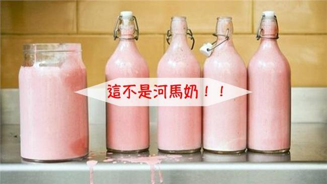

河馬奶不是粉紅色的
河馬奶不是粉紅色的

說明
河馬奶和其他哺乳類動物類似，都是呈現白色或是米白色，之所以會出現粉紅色的色澤，就是帶有紅色色素的河馬汗酸（hipposudoric acid）不小心和河馬白色奶混合，才有機會出現不可思議的粉紅色。
經過一番資料搜集與查證，微醺梅酒必須戳破各位的粉紅泡泡，因為「河馬奶是粉紅色的」的說法其實是誤傳。實際上，河馬奶和一般哺乳類動物的奶汁顏色大同小異，約莫是白色或米白色，沒有任何確切證據顯示有哪一隻河馬曾經擠出過粉紅色的奶汁；唯一有可能造成河馬奶帶點粉紅色澤的關鍵，在於河馬皮膚所分泌的「河馬汗酸」。
如果有特別仔細察看河馬的話，可能會發現他們留的汗水似乎帶有血紅色，而這血紅色來自於帶有紅色色素的河馬汗酸以及有橘色色素的正河馬汗酸，它們都是由河馬的皮膚所分泌的，主要的功用在於保護河馬，可以幫助防曬、保濕以及抗菌。
資料來源:http://www.rumtoast.com/1033/%E7%B5%A6%E4%BD%A0%E7%8C%9C%E7%8C%9C%E7%9C%8B-%E6%B2%B3%E9%A6%AC%E5%A5%B6%E6%98%AF%E7%B2%89%E7%B4%85%E8%89%B2%E9%82%84%E6%98%AF%E7%99%BD%E8%89%B2%EF%BC%9F